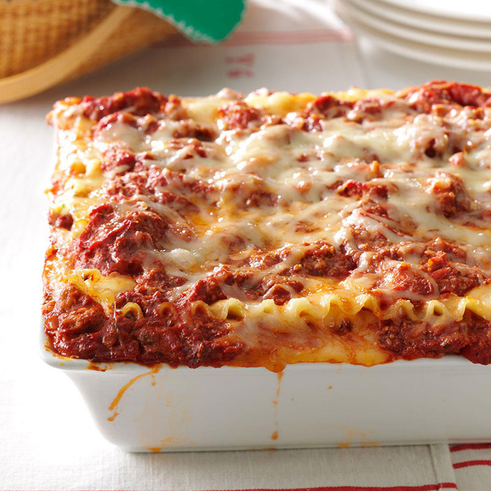
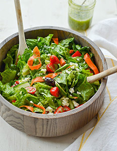
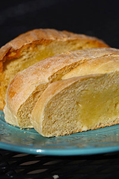

How to make lasagna
What is Lasagna?
Lasagna It’s one of the ultimate one-pot meals — whether you’re
cooking for a potluck or just the family dinner, it’s hard to go wrong
with lasagna.
Layers of vegetables, sauce, cheese, and sometimes meat,
sandwiched between sheets of pasta, make for a dish that’s
just as fun to eat as it is to make.
Diet food this is not.
What Is Lasagna? - The Daily Meal

Picture by Taste of Home
This recipe is from
Better Homes and Gardens classic Lasagna recipe from 1953.
Ingredients
Meat Sauce
- 1 lb.ground Italian sausage
- 1 clove garlic, minced
- 1 tbs. whole basil
- 1 1-lb. can tomatoes
- 2 6-oz. cans tomato paste
Cheese Filling
- 3 cups creamy cottage cheese
- Half a cup grated Parmesan or Romano cheese
- 2 tbs. parsley flakes
- 2 beaten eggs
- 2 tsp. salt
- Half a tsp. pepper
Noodles
- 10 oz. package of lasagna noodles
Cheese Topping
- 1 lb. Mozzarella cheese, sliced very thin
Instructions
Noodles
- Boil the noodles following package instructions.
- Drain and wash in cold water.
Meat Sauce
- Brown meat slowly; spoon off fat.
- Add remaining meat sauce ingredients.
- Simmer uncovered half an hour.
- Stir now and then.
Cheese Filling
- In a bowl, mix the 6 cheese filling ingredients.
Preheat oven to 3750
Assembly in a 9x13 baking dish
- Place half the cooked noodles
- Spread half the cheese filling
- Place half of the mozzarella
- Spread half of the meat sauce
- Repeat the first 4 assembly steps
Bake in center of oven 30 minutes
What side dishes go with lasagna?


A simple side salad is a classic side for lasagna, as well as garlic bread.
For more information contact
Janet's E-mail
University of Montana
32 Campus Drive
Missoula, MT 59812